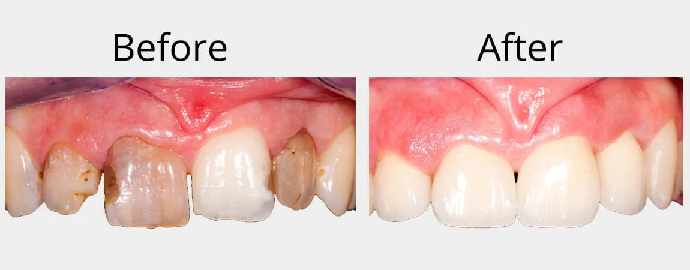

A custom-made crown or “cap” completely covers the top of a tooth. Crowns not only repair and strengthen a damaged tooth but can improve the appearance. Bridges are similar to crowns but they replace one or more missing teeth making it easier to chew and also enhance the appearance.
A crown is used to entirely cover or “cap” a damaged tooth. Besides strengthening a damaged tooth, a crown can be used to improve its appearance, shape or alignment. A crown can also be placed on top of an implant to provide a tooth-like shape and structure for function. Porcelain or ceramic crowns can be matched to the colour of your natural teeth.
Other materials include gold and metal alloys, acrylic and ceramic. These alloys are generally stronger than porcelain and may be recommended for back teeth. Porcelain bonded to a metal shell is often used because it is both strong and attractive.
A Crown may be recommended to:
Replace a large filling when there isn’t enough tooth remaining
Protect a weak tooth from fracturing
Restore a fractured or cracked tooth
Attach a bridge
Cover a dental implant
Cover a discoloured or poorly shaped tooth
Cover a tooth that has had root canal treatment
A bridge may be recommended if you’re missing one or more teeth. Gaps left by missing teeth eventually cause the remaining teeth to rotate or shift into the empty spaces, resulting in a bad bite. The imbalance caused by missing teeth can also lead to gum disease and temporomandibular joint (TMJ) disorders.
Bridges are commonly used to replace one or more missing teeth. They span the space where the teeth are missing. Bridges are cemented to the natural teeth or implants surrounding the empty space. These teeth, called abutments, serve as anchors for the bridge. A replacement tooth, called a pontic, is attached to the crowns that cover the abutments.
As with crowns, you have a choice of materials for bridges. Your dentist can help you decide which to use, based on the location of the missing tooth (or teeth), its function, aesthetic considerations and cost. Porcelain or ceramic bridges can be matched to the colour of your natural teeth.
NOTE: Your dentist may recommend implants as a means of replacing missing teeth. Implants can replace missing teeth without the need to touch or restore adjacent teeth next to space. Please refer to the section on Dental Implants.
Before either a crown or a bridge can be made, the tooth (or teeth) must be reduced in size so that the crown or bridge will fit over it properly like a thimble fitting over a peg. After reducing the tooth/teeth, your dentist will take an impression to provide an exact mould for the crown or bridge. If porcelain is to be used, your dentist will determine the correct shade for the crown or bridge to match the colour of your existing teeth.
Using this impression, a dental lab then makes your crown or bridge, in the material your dentist specifies. A temporary crown or bridge will be put in place to cover the prepared tooth while the permanent crown or bridge is being made. When the permanent crown or bridge is ready, the temporary crown or bridge is removed, and the new crown or bridge is cemented over your prepared tooth or teeth.
Cracked Tooth
Laser Troughing
Maryland Bridge
Crown Process Anterior
Bridge Bone Loss
Bridges
“Great experience! I hadn’t been to the dentist in years, but they were very understanding and put me at ease. Everything was prompt and efficient and everyone was very friendly.”
Referred by a friend who raves about this dentist. I was not disappointed. First impressions are the best impressions. I was very pleased with the service. My teeth felt like new after the cleaning.
I had never had a good dental experience until meeting Dr. Barli! I love all of the staff at Million Smiles Dental and recommend them to everyone. I just took my son today and he loved every minute.
“My wife and I recently had our six month checkups with Dr. Barli. The appointment started on time, ended on time, and our hygienists were very personable and professional.
So wonderful, can’t even express how thankful I am for your professionalism and generosity to veterans. Truly a blessing. Honored to meet you.
Excellent facility and provider demeanor. Everything was well explained and my comfort clearly mattered.
Wow! That was an awesome experience! The easiest crown I have ever had. Dr. Barli made me laugh even though I was very nervous.